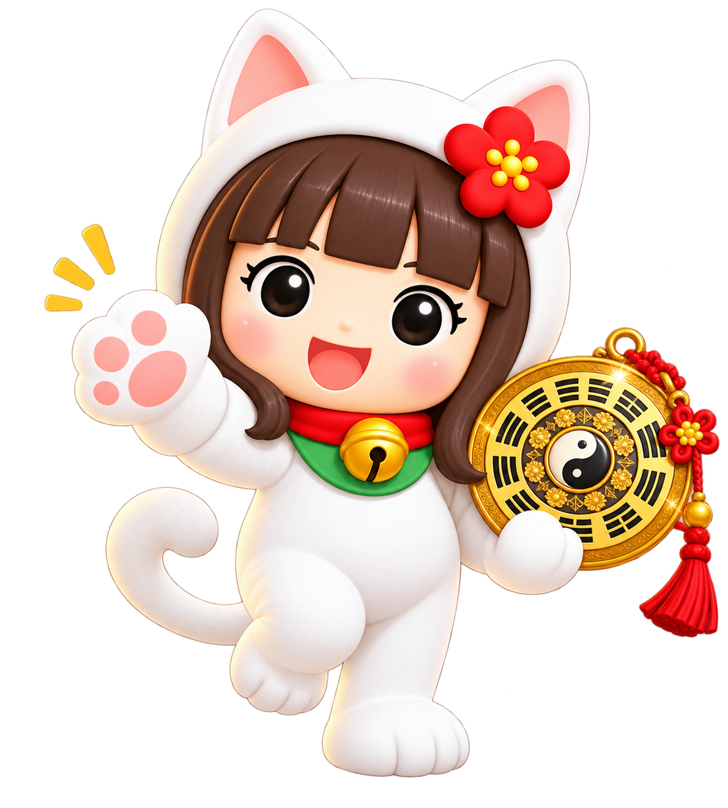

✦ 九星うめこ PRESENTS ✦
九星うめこ
今月どうなん？
今月、あんたどうなん？
担当の九星うめこ、呼んできます🤣

誕生日入れてみ。
担当、呼んでくるわ🤣
担当、呼んでくるわ🤣
担当、ちゃんと働いてるかな…🤣
1926〜2026年対応。入力した生年月日は保存・送信しません。端末内で判定します。
1926〜2026年対応。入力した生年月日は保存・送信しません。端末内で判定します。
生まれた日、確認しまーす🐾
● ● ●
📱 来月もすぐ呼ぶ？
うめこの公式LINEへ
生年月日は保存せず、九星番号だけこの端末に保存します。